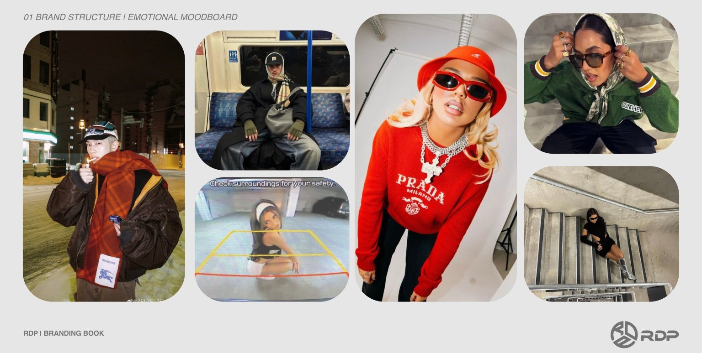
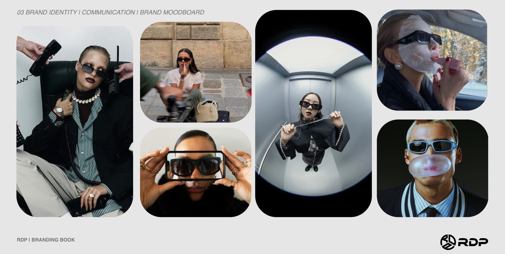
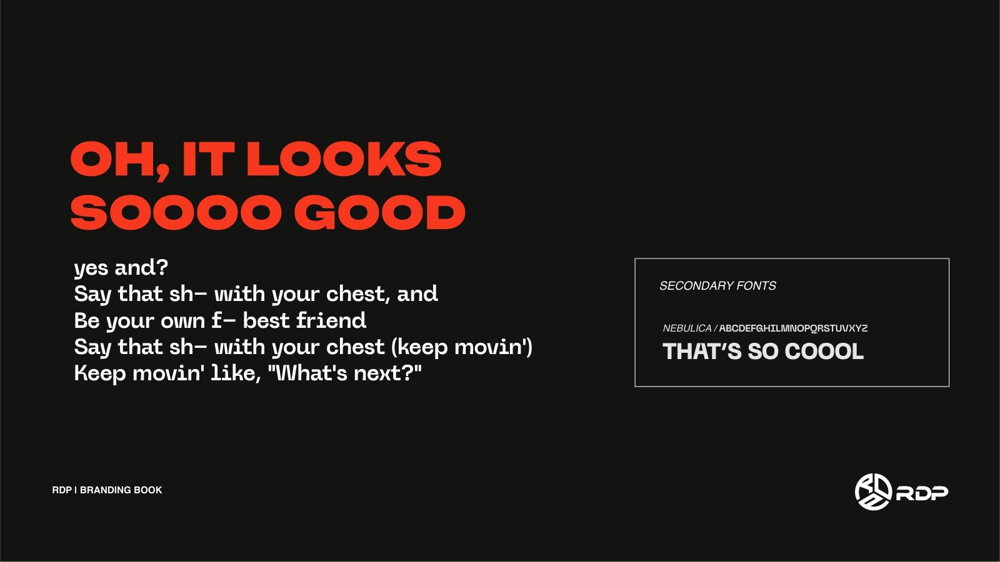
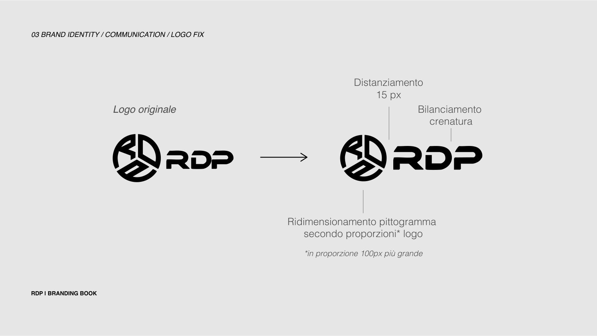
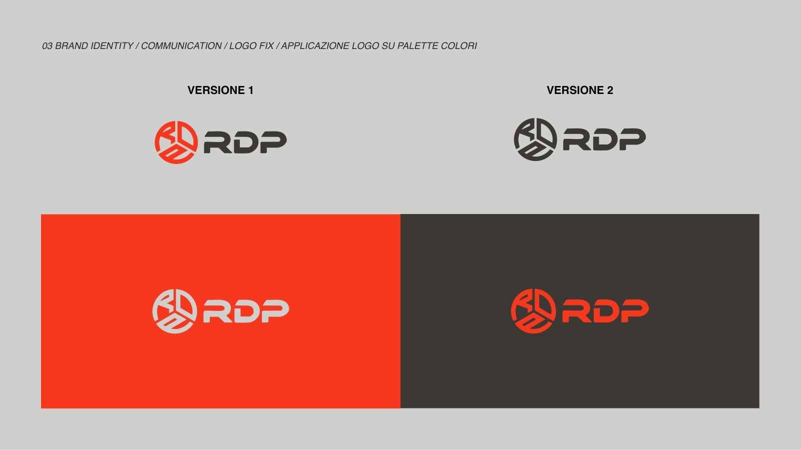
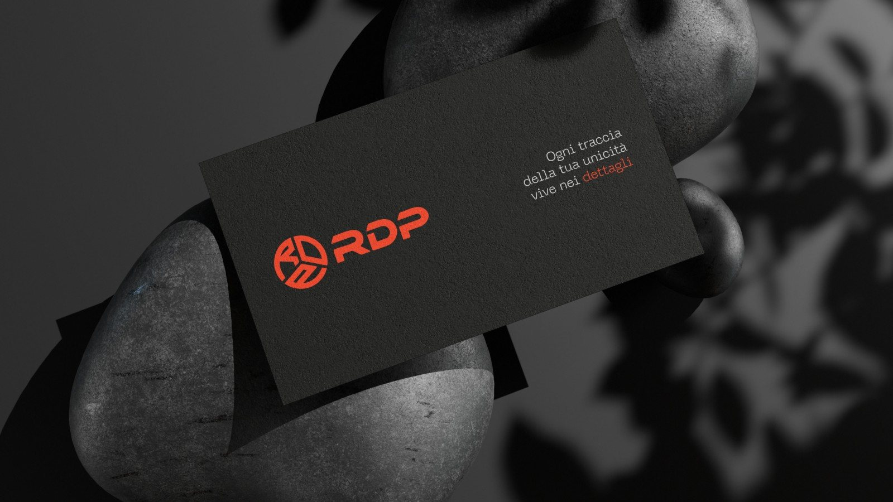
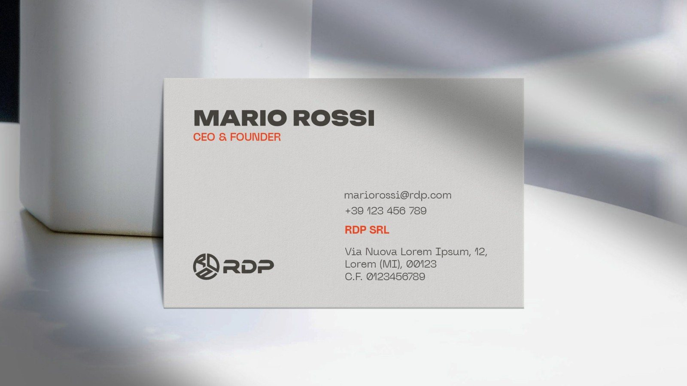
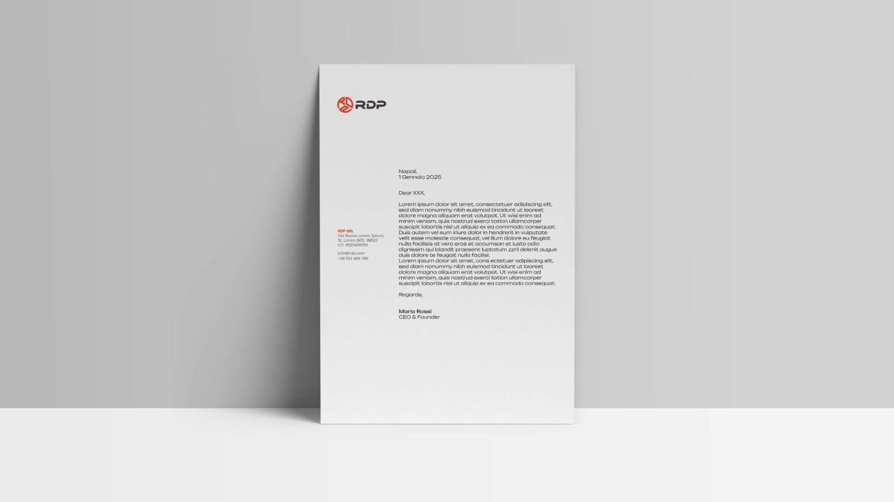
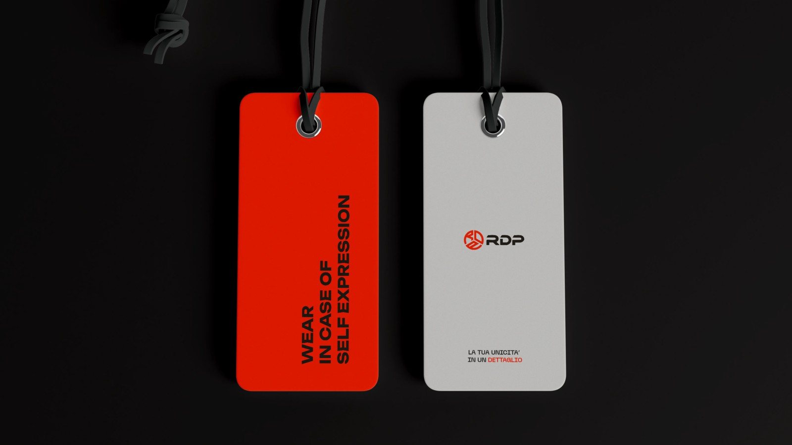
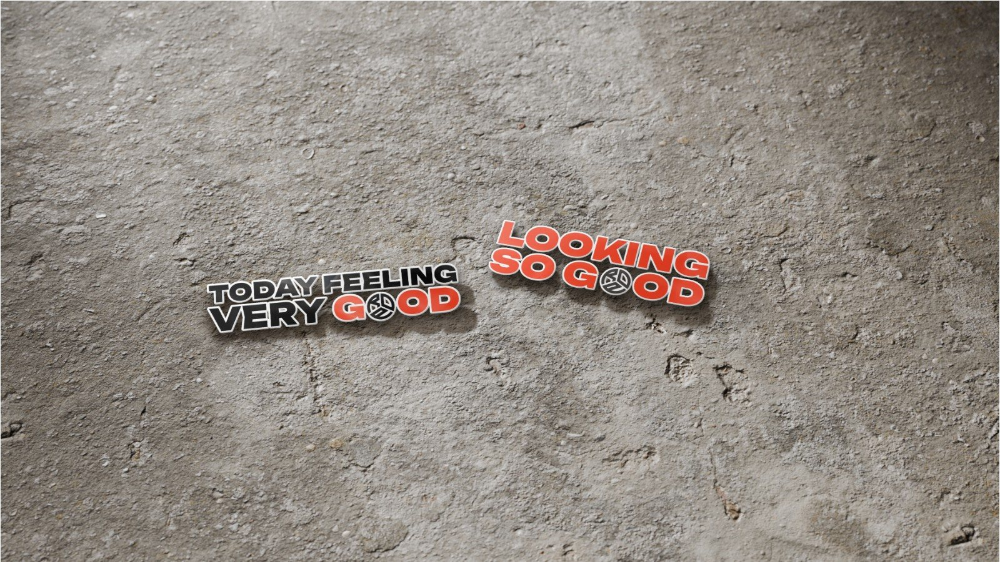

RDP

Occhiali come modo di essere
RDP è un nuovo brand che si prepara a entrare nel mercato dell’accessoristica italiana, con l’ambizione di espandersi oltre i confini e avviare una propria produzione di occhiali che rappresentino un modo di essere, più che un semplice accessorio.
Oggi produce e distribuisce occhiali da sole, e punta ad allargarsi al settore sportivo e a Paesi come Francia, Spagna e Germania.
Il Ribelle e l’Amante
Il brand vuole andare oltre la semplice proposta di un prodotto e portare un proprio concetto di styling. Abbiamo costruito la sua struttura partendo dagli archetipi di marca: il Ribelle come archetipo principale e l’Amante come secondario.
Stile personale, dentro la collettività
Abbiamo analizzato la comunicazione dei competitor: OS Sunglasses come diretto, Meller e Hawkers come indiretti. Il target ha tra i 18 e i 45 anni, cerca un proprio stile senza uscire dalla collettività e vede l’accessorio come parte della propria personalità.
Guarda al lusso anche solo come ispirazione, per questo cerca un look curato a un prezzo accessibile.
Le parole chiave
Brand structureIl coraggio di distinguersi, sfidare le convenzioni e abbracciare uno stile unico.
Il fascino dello stile, con un tocco di esclusività a cui le persone aspirano.
L’appartenenza a un movimento che valorizza l’espressione personale attraverso design e styling.
Emotional moodboard
Brand structure

Ogni traccia della tua unicità vive nei dettagli.
Ispirare chiunque abbia il coraggio di distinguersi, abbracciare la propria autenticità e abbattere le barriere dello stile convenzionale.
Diventare un movimento che trasforma il modo di esprimersi e di farsi vedere, unendo il coraggio di essere sé stessi con l’arte di raccontarsi attraverso lo stile.
La palette
Bright · bold · solid#FE3B1FColore principale#3D3935Colore principale#D9D8D6Colore principale#151515Fondo neutro#FFFFFFFondo neutro
Unbounded e Nebulica
Unbounded come font principale: largo, deciso e ironico, perfetto per titoli e claim. Nebulica come font secondario per i testi e le informazioni, dal thin al black.
Il logo è stato rifinito con un lavoro di bilanciamento, crenatura e spaziatura, e declinato su tutti i colori della palette.
Il logo
Logo fix & versioni

Le applicazioni
Brand kitIl sistema visivo applicato a biglietti da visita, carta intestata, cartellini, shopper e sticker.







 Next project
Real estate · USAAlpha NetworkProgetto completo
Next project
Real estate · USAAlpha NetworkProgetto completo